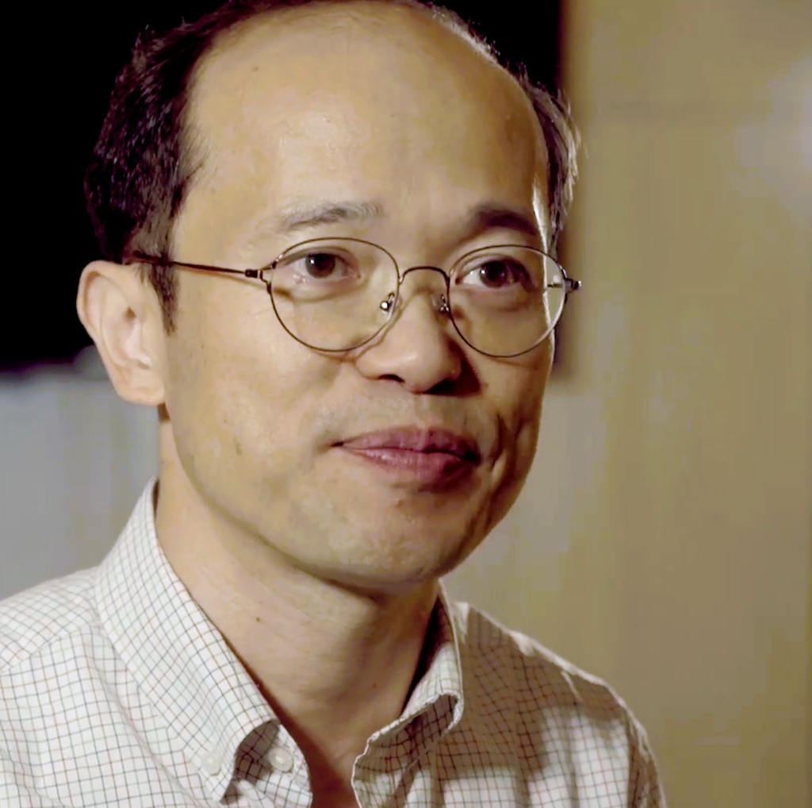

KAIST 화학과 CPRL 소개
CPRL(Computational Photodynamics Research Lab)은 KAIST 화학과 산하 연구실로, 슈퍼컴퓨터와 양자역학 시뮬레이션을 통해 분자의 빛 반응과 전자 이동을 탐구하는 연구실입니다.

KAIST 화학과 교수 (2019 ~ )
양자 화학 분야의 이론 및 계산 연구를 이끌고 있습니다.


KAIST 화학과 석·박사 과정 및 박사후 연구원들이 함께 모여 첨단 컴퓨터 시뮬레이션과 양자 동역학을 통해 분자의 새로운 광반응을 개척하고 있습니다.
CPRL 주요 연구 내용
"눈에 보이지 않는 작은 세계를 컴퓨터 가상 실험실에서 탐험합니다."
KAIST 화학과 CPRL은 화학약품을 섞는 실험실이 아닌, 슈퍼컴퓨터와 양자 컴퓨터를 활용해 화학 반응 및 양자 세계를 탐구하는 연구실입니다. 우리가 매일 사용하는 스마트폰 액정 화면부터 미래 인류를 구할 신약 분자 설계까지, 컴퓨터 시뮬레이션으로 화학의 새로운 미래를 열어가고 있습니다.
"컴퓨터와 AI를 활용해, 복잡한 화학 반응의 에너지 지형을 빠르고 정확하게 계산해요"
수만 개의 원자가 얽혀 있는 생명체 속 단백질이나 신약 분자의 화학 반응은 슈퍼컴퓨터로도 하나하나 정밀하게 계산하기 어렵습니다. 따라서 화학 반응이 직접 일어나는 핵심 영역은 정밀한 양자역학으로 세밀하게 계산하고, 주변을 둘러싼 방대한 물 분자나 단백질 환경은 계산 속도가 빠른 분자역학으로 효율적으로 처리하는 하이브리드 시뮬레이션 기술(IM/MM)을 CPRL 연구실에서 독자 개발했습니다. 여기에 인공지능(신경망 머신러닝)을 결합하여 중간 에너지 변화를 수학적으로 매끄럽게 보간(연결)함으로써, 복잡한 화학 반응과 분자의 움직임을 실제 실험실보다 훨씬 빠르고 정확하게 컴퓨터로 예측할 수 있습니다.


"스마트폰에 갇혀있던 75%의 전자를 구출하여, 보다 효율적으로 빛을 만들어요"
분자 속 전자들은 주변의 열과 진동 때문에 양자적 특성이 잘 보이지 않지만, 빛이나 전기를 받으면 높은 에너지 상태로 튀어 올랐다가 낮은 상태로 내려가면서 빛 에너지를 방출하며 전자 스핀과 결맞음 같은 신비로운 '양자 효과'를 강하게 드러냅니다. 그런데 우리가 매일 쓰는 스마트폰 디스플레이(OLED)에서는 25%의 전자들만 빛을 내고, 나머지 75%의 전자는 문이 잠긴 방에 갇혀 '스마트폰 발열'로 사라지는 배터리 낭비의 한계가 있었습니다. CPRL 연구실은 독자적인 양자 동역학 시뮬레이션을 통해 갇혀 있던 전자를 높은 곳으로 우회시켜 100% 모두 빛으로 전환하는 혁신적인 '핫 엑시톤' 양자 효과 메커니즘을 규명했습니다.


"기존 슈퍼컴퓨터의 한계를 넘어, 양자 컴퓨터와 손잡고 복잡한 분자의 비밀을 풀어요"
분자 속 수많은 전자들은 서로를 밀어내며 복잡하게 얽혀 있어서, 분자가 조금만 커져도 계산해야 할 경우의 수가 우주 전체의 모래알 수보다 많아지는 '지수 폭발(Exponential Complexity)'이 일어납니다. 인류 최강의 슈퍼컴퓨터조차 멈춰버리는 이 난제를 해결하기 위해 CPRL 연구실은 미래의 게임체인저인 양자 컴퓨터(Quantum Computer)를 화학 계산에 도입했습니다. 현재의 초기 양자 하드웨어가 가진 물리적 노이즈 한계를 뛰어넘기 위해, 기존의 틀을 깨는 발상(Thinking Outside-of-the-Box)으로 양자 컴퓨터와 일반 컴퓨터가 역할을 나누어 협동하는 '양자-고전 하이브리드 계산 기술(VQE-PT2)'을 독자 개발하여 실제 글로벌 양자 컴퓨터(IonQ)에서 화학적 정확성을 입증했습니다.
빛나는 분자로 세상을 비추다:
OLED의 발광 원리와 화학 분자 디자인
전기 에너지가 어떻게 아름다운 색의 빛으로 변환될까요? 전자의 들뜬 상태와 스핀 통계, 그리고 스마트폰 발열을 일으키는 75%의 열 손실 딜레마를 극복하는 KAIST CPRL 연구진의 차세대 분자 설계 전략을 심층 해부합니다.
OLED 심층 해부 가이드 콘텐츠 준비 중
'양자 컴퓨터란?' 가이드와 동일한 방식으로 고해상도 연구 장비 사진, 인포그래픽, 원자/분자 물리 시뮬레이션 해설 콘텐츠가 배치될 예정입니다.
가상 실험 1: 전자의 에너지 계단과 형광 발광 (스토크스 이동)
성취기준 [9과11-02] [9과14-03]바닥 상태(1층)의 전자에 높은 에너지의 자외선을 흡수시켜 들뜬 상태(3층)로 점프시킵니다. 전자가 진동하며 열을 흘리고, 남은 에너지를 형광빛으로 방출하며 착지하는 에너지 보존 과정을 확인해 보세요.
가상 실험 2: 스마트폰 OLED의 75% 배터리 손실 & KAIST 핫 엑시톤 구출
성취기준 [9과14-02] [9과01-02]전기를 주입했을 때 생성되는 100개의 엑시톤(전자-정공 쌍)의 스핀을 분석합니다. 일반 스마트폰에서는 25%만 빛을 내고 75%는 열로 사라지지만, KAIST 핫 엑시톤 구출 스위치를 켜면 버려지던 75%가 빛으로 구출됩니다.
OLED 스핀 통계 한계 극복과
핫 엑시톤(Hot Exciton) 광물리 원천 해설
1. 파견 교사의 미션과 교육과정 전이(Pedagogical Transposition) 철학
본 자료는 KAIST 화학과 계산 광동역학 연구실(CPRL)에 파견된 중학교 과학교사가 연구진의 분자 광물리 원천 연구 성과를 깊이 있게 이해하고, 이를 2022 개정 교육과정에 부합하는 중학생 수준의 탐구 수업으로 성공적으로 변환하기 위해 집필된 교사용 심층 배경 자료입니다.
핵심 교육과정 전이 원칙: "수식의 경량화, 개념의 본질화"
대학원 수준의 유기 광물리는 복잡한 다체 파동함수, 비단열 원추교차(Conical Intersection), 스핀-궤도 결합 해밀토니안($\hat{H}_{\text{SO}}$)을 다룹니다. 그러나 이를 중학교 교실로 가져올 때의 핵심은 "수학적 장벽은 걷어내되, 과학적 인과관계와 자연의 규칙성은 100% 보존하는 것"입니다.
- 현상 기반 도입: 일상 속 관찰 가능한 현상(토닉워터 자외선 형광, 스마트폰 발열, 무지개 분광기)으로 호기심 촉발.
- 직관적 과학 은유: 트램펄린 점프(전자 전이), 부르르 떨며 열 흘리기(진동 이완), 서로 마주보는 스핀 팽이(단일항)와 나란한 팽이(삼중항).
- 교육과정 정합성: 2022 개정 성취기준(빛의 합성, 원자 모형, 전기에너지의 열·빛 전환)과의 완벽한 유기적 결합.
2. [원천 연구] OLED 스핀 통계 한계 극복과 핫 엑시톤(Hot Exciton) 메커니즘
2.1 학술적 배경: 유기 발광 분자의 스핀 통계와 75% 열 손실 딜레마
유기 발광 다이오드(OLED)에서 음극에서 주입된 전자($e^-$)와 양극에서 주입된 정공($h^+$)이 발광층의 유기 분자에서 만나 엑시톤(Exciton, 들뜬 전자-정공 쌍)을 형성합니다. 전자는 스핀 $s=1/2$을 가지므로, 양자역학적 결합 시 총 스핀 양자수는 $S=0$(단일항) 또는 $S=1$(삼중항)이 됩니다.
• 단일항 (Singlet State, $S=0$): 스핀 파동함수 $\frac{1}{\sqrt{2}}(\alpha\beta - \beta\alpha)$. 비축퇴(1개 상태, 25% 확률). 바닥 상태($S_0$)와 스핀 다중도가 같아 쌍극자 전이 허용 $\rightarrow$ $10^{-9}$초 단위 초고속 형광(Fluorescence) 방출!
• 삼중항 (Triplet State, $S=1$): 스핀 파동함수 $\alpha\alpha, \frac{1}{\sqrt{2}}(\alpha\beta + \beta\alpha), \beta\beta$. 3중 축퇴(3개 상태, 75% 확률). 바닥 상태로의 전이가 스핀 금지 전이 $\rightarrow$ 상온에서 빛을 내지 못하고 진동 열에너지로 소실!
이로 인해 전통적인 1세대 형광 OLED는 전기 에너지를 넣었을 때 최대 내부 양자 효율(IQE)이 25%에 묶여 있었으며, 나머지 75%의 에너지는 디스플레이 발열과 분자 열화를 유발하는 '배터리 도둑'으로 작용하였습니다.
2.2 CPRL의 핵심 연구 성과: 핫 엑시톤(Hot Exciton) 및 비단열 스핀 동역학
KAIST CPRL 이영민 교수 연구실은 버려지는 75%의 삼중항 엑시톤을 100% 빛으로 전환(Triplet Harvesting)하기 위한 미시적 메커니즘 규명에 집중하고 있습니다. 기존 3세대 TADF(열활성 지연형광)는 최저 단일항($S_1$)과 최저 삼중항($T_1$) 사이의 에너지 갭을 극소화하지만, 엑시톤 수명이 길어져 고휘도 롤오프(Roll-off)와 청색 소자의 화학적 결합 분해 문제가 있었습니다.
CPRL 연구진은 고에너지 들뜬 삼중항 준위($T_2$ 이상)에 주목하였습니다. 전하 재결합 시 고에너지 상태로 생성된 삼중항 전자가 에너지를 잃고 $T_1$으로 이완되기 전에, 높은 옥상 준위에서 최저 들뜬 단일항($S_1$)으로 초고속 역간교차(RISC: $T_2 \to S_1$)를 일으켜 형광으로 방출시키는 통로입니다.
최근 발표된 논문(J. Phys. Chem. A 2026, 130, 758–766)에서는 핫 엑시톤 OLED 시스템에서 스핀-궤도 결합(Spin-Orbit Coupling, SOC)에 섭동적 진동 결합 보정(Perturbative Vibronic Correction)을 적용하여, 분자 골격의 미세한 진동 모드가 $T_2 \to S_1$ 스핀 반전 전이를 어떻게 증폭시키는지를 정량적으로 규명하였습니다.
3. 교사용 수업 브릿지 전략: OLED 단원
- 원자 속 전자의 트램펄린 점프: $S_0 \to S_1$ 흡수를 '1층에서 3층 옥상으로 트램펄린 점프'로, 진동 이완을 '불안해서 부르르 떨며 열 흘리기'로, $S_1 \to S_0$ 형광을 '남은 에너지로 알록달록 무지개빛 뿜으며 착지'로 시각화합니다.
- 스핀 팽이 모형: 단일항을 '서로 마주보고 도는 팽이(↑↓, 비상문 열림, 25%)', 삼중항을 '나란히 도는 팽이(↑↑, 비상문 닫힘, 75%)'로 제시하여 확률 1:3의 직관적 근거를 제공합니다.
- 스마트폰 난로 현상과 KAIST 초고속 에너지 전환 기술: 75%가 1층 골방($T_1$)에 갇혀 열을 내기 전에, 2층($T_2$)에서 단일항($S_1$)으로 방향을 전환하는 '초고속 에너지 전환 기술'을 통해 100% 발광 효율을 달성하는 과학적 원리를 전달합니다.
4. CPRL OLED 원천 연구 대표 논문 목록
5. OLED 수업 시 교사용 Q&A 및 오개념 지도 요령
[교사 지도 팁]: "빛은 에너지를 배달하는 에너지 택배원이야. 자외선은 큰 에너지 택배를 싣고 와서 원자 속 전자를 3층으로 번쩍 올려놓았지. 그런데 3층이 너무 높아 불안해서 전자가 온몸을 부르르 떨며 일부 에너지를 '열'로 흘려버렸단다. 그래서 남은 에너지만 가지고 1층으로 내려오니까, 처음 들어간 자외선보다 에너지가 작아져서 눈에 보이는 파란색이나 초록색 가시광선(형광)으로 변해서 나온 거야! 이때도 [흡수한 자외선] = [방출된 형광] + [흘린 열]이라는 위대한 에너지 보존 법칙은 100% 지켜진단다."
[교사 지도 팁]: 중학교 2학년 [9과10-03](빛의 합성 및 영상 장치), [9과11-02](원자 모형과 전자), [9과14-02](전류 모형 및 반도체 해설), [9과14-03](전기 에너지의 열·빛 전환과 소비 전력) 성취기준과 유기적으로 결합됩니다. 교과서에 머물러 있는 도체/반도체와 RGB 화소 개념을 'KAIST 첨단 OLED 분자 공학'과 직결시켜 학생들의 융합 탐구 사고력을 비약적으로 끌어올립니다.
원자 한 개를 낚아채 양자 두뇌를 만들다:
이온 트랩 하드웨어와 파이썬 알고리즘의 비밀
"가열된 금속 기체에서 어떻게 원자 1개를 진공에 가둘까?", "왜 이온들이 서로 밀어내지 않고 일렬로 줄을 설까?",
그리고 "내가 작성한 10줄의 파이썬 코드가 어떻게 물리적 레이저 펄스로 변해 화학 분자의 비밀을 풀까?"
KAIST 화학과 계산화학 연구실(CPRL)이 실제 실험 장비와 물리학 원리로 그 모든 궁금증을 명쾌하게 풀어드립니다.
양자 컴퓨터의 '두뇌'는 무엇으로 만드는가?
반도체 실리콘 칩(0과 1) vs 자연이 만든 완벽한 원자(중첩과 얽힘)
우리가 매일 사용하는 스마트폰과 노트북 속 CPU는 실리콘(규소, Si) 기판 위에 수십억 개의 미세한 스위치(트랜지스터)를 만들어 둡니다. 전기가 통하면 1, 통하지 않으면 0이라는 디지털 2진수로 세상의 모든 계산을 처리합니다.
하지만 양자 컴퓨터(Quantum Computer)는 완전히 다릅니다. 인위적으로 만든 트랜지스터 스위치를 쓰는 것이 아니라, 물질의 가장 깊숙한 기본 단위인 '원자' 그 자체의 양자역학적 상태를 정보의 기본 단위인 큐비트(Qubit, Quantum Bit)로 사용합니다.
초전도 큐비트 (Superconducting)
- 재료: 실리콘 기판 위에 알루미늄/니오븀 초전도 금속 박막 회로 제작
- 원리: 극저온에서 저항이 0이 되는 초전도 전류의 회전 방향(시계/반시계)으로 0과 1을 정의
- 장점: 회로 연산 속도(나노초 단위)가 매우 빠르고 반도체 공정 활용 가능
- 약점: 인간이 깎아 만든 금속이라 큐비트마다 미세한 오차가 존재하며, 영하 273.14℃(15 mK)를 유지하는 거대한 '황금빛 샹들리에(희석 냉동기)'가 반드시 필요함
이온 트랩 큐비트 (Trapped Ion)
- 재료: 희토류 원소인 이테르븀(Yb, 원자번호 70) 또는 알칼리 토금속인 칼슘(Ca), 바륨(Ba)
- 원리: 전자 하나를 떼어낸 순수 양이온(Yb⁺)의 최외각 전자 스핀 궤도 에너지 준위 사용
- 장점: 지구에서 잡든 안드로메다 은하에서 잡든 우주에 존재하는 모든 이테르븀 원자는 100.000% 완벽히 동일함 (품질 편차 0, 긴 결맞음 시간)
- 상태 유지: 극저온 냉동기가 필요 없으며, 실온(Room Temp)의 진공 챔버 안에서 전자기장으로 공중에 띄워 유지함!

초전도 방식이 "인간이 정밀 기계로 나노미터 크기의 똑같은 모래시계를 수백 개 깎아 맞추려 애쓰는 기술"이라면, 이온 트랩 방식은 "신(자연)이 이미 100억 년 전에 완벽하게 오차 0으로 만들어둔 똑같은 물방울(원자)을 공중에 띄워 쓰는 기술"입니다.
가열된 원자에서 이온을 낚아채는 마법
"금속 덩어리를 400℃로 가열하는데 어떻게 허공에 딱 멈춰 세울까?"
"고체 금속을 가열하면 기체가 되어 사방으로 미친 듯이 날아갈 텐데, 대체 무슨 수로 원자를 하나하나 골라내어 공중에 가둘 수 있나요?" 이것은 물리학자들도 수십 년간 머리를 싸매며 연구했던 노벨 물리학상(1989년 볼프강 파울)의 위대한 발명입니다.
1단계: 원자 오븐(Atomic Oven)에서 원자 빔 분출
손가락 한 마디 크기의 가느다란 스테인리스 스틸 튜브 안에 고체 이테르븀(Yb-171) 금속 조각을 넣고 전류를 흘려 약 400℃ ~ 500℃로 달굽니다. 챔버 내부는 공기 분자가 전혀 없는 초고진공(UHV, 10⁻¹¹ Torr: 달 표면보다 100배 깨끗한 진공) 상태이므로, 기화된 이테르븀 중성 원자들은 공기 저항 없이 미세한 노즐을 통해 한 줄기 총알(초속 수백 미터)처럼 발사됩니다.
2단계: 2단계 공명 레이저 저격 (Two-Step Photo-Ionization)
날아가는 중성 원자 중에서 우리가 원하는 '이테르븀-171' 동위원소만 딱 집어서 전자를 떼어내야 합니다!
• 399 nm 보랏빛 레이저: 오직 이테르븀-171 원자의 최외각 전자만 반응할 수 있는 초정밀 파장을 쏴서 전자를 바깥 궤도(¹P₁)로 들뜨게 만듭니다.
• 369 nm / 394 nm 자외선 레이저: 들뜬 전자에 추가 에너지를 공급해 원자 밖으로 완전히 튕겨내 버립니다!
순식간에 중성 원자는 순수한 양이온(¹⁷¹Yb⁺)으로 변신하며 강력한 전기적 성질(+)을 띠게 됩니다.
3단계: 폴 트랩(Paul Trap) - '회전하는 말안장'의 마법
전자기학의 대원칙인 언쇼의 정리(Earnshaw's Theorem)에 따르면, 고정된 자석이나 고정된 전기장(DC)만으로는 전하를 3차원 허공에 가둘 수 없습니다(반드시 어느 한쪽 방향으로는 미끄러져 튕겨 나갑니다).
물리학자 볼프강 파울은 "말안장을 모터로 빠르게 빙글빙글 돌리는 아이디어"를 고안했습니다!
말안장 한가운데에 쇠구슬을 가만히 올려두면 좌우로 미끄러져 땅에 떨어집니다. 하지만 말안장을 초당 수십 바퀴씩 모터로 아주 빠르게 회전시키면 어떻게 될까요?
구슬이 아래로 떨어지려는 찰나에 안장의 솟아오른 면이 구슬을 위로 쳐올리고, 다시 반대편으로 떨어지려는 순간 또 반대쪽이 쳐올립니다! 구슬은 떨어질 틈을 찾지 못하고 마치 보이지 않는 그릇에 담긴 것처럼 말안장 회전축 정중앙에 둥둥 떠 있게 됩니다.
이온 트랩에서는 4개의 전극에 초당 수천만 번(수십 MHz) 극성이 바뀌는 라디오파(RF 고주파 전압)를 걸어 이온을 허공에 가둡니다!

1열 종대와 쿨롱 결정(Coulomb Crystal)
"양이온끼리는 서로 밀어낼 텐데, 어떻게 완벽한 일렬로 줄을 설까?"
양이온(+ 전하) 여러 개를 한 공간에 가두면 당연히 쿨롱 척력(서로 밀어내는 힘) 때문에 사방으로 흩어지려 합니다. 게다가 처음 가열되어 오븐에서 튀어나온 이온은 온도가 수백 ℃에 달해 엄청난 속도로 요동치고 있습니다. 이 문제를 해결하는 두 가지 물리적 기술이 바로 도플러 레이저 냉각과 선형 폴 트랩의 기하학적 구속입니다.
도플러 레이저 냉각 (Doppler Laser Cooling) - 브레이크 밟기
빛(광자)도 질량과 운동량을 가지고 있습니다. 날뛰는 이온을 향해 369.5 nm 레이저를 마주 비춰줍니다.
도플러 효과: 이온이 레이저를 향해 달려올 때만 빛의 파장이 압축되어 공명 흡수가 일어나며 광자의 반대 방향 충격을 받습니다(브레이크!). 반대로 레이저와 같은 방향으로 달아날 때는 빛을 흡수하지 않습니다.
수만 번의 브레이크를 연속으로 밟으면서, 이온의 온도는 불과 0.01초 만에 절대영도 직전인 0.0001 K(수백 마이크로켈빈)으로 얼어붙습니다!
쿨롱 결정(Coulomb Crystal)의 형성 - 스프링 구슬 줄다리기
열운동 에너지를 완전히 빼앗긴 차가운 이온들은 이제 전자기장의 형태에 지배당합니다.
선형 폴 트랩은 x축과 y축(좌우/상하)으로는 매우 강력하게 조여 매고, z축(길이 방향)으로는 느슨하게 전기장을 만듭니다.
좌우로는 탈출할 수 없으니 이온들은 z축을 따라 일렬로 정렬할 수밖에 없으며,
"외부 전극이 양쪽 끝에서 밀어 넣는 힘" vs "이온들끼리 서로 밀어내는 쿨롱 반발력"이 완벽한 평형을 이루며 약 5 마이크로미터(μm) 간격으로 완벽한 1열 종대 기차를 만듭니다!


레이저로 계산을 수행하는 원리
"공중에 매달린 원자에 레이저를 쏘는데 어떻게 수학과 화학 문제가 풀릴까?"
원자가 공중에 줄을 서 있는 것만으로는 계산이 되지 않습니다. 이제 이 원자들을 '양자 스위치'로 조작해야 합니다. 이테르븀 이온(¹⁷¹Yb⁺)의 중심에는 원자핵이 있고, 그 주위를 단 1개의 최외각 전자가 돌고 있습니다.
바닥 상태 (F=0, m_F=0)
전자의 스핀 자기모멘트와 원자핵의 스핀이 서로 반대 방향으로 결합된 가장 안정한 에너지 상태. 디지털 신호 0에 해당합니다.
들뜬 상태 (F=1, m_F=0)
스핀이 나란히 정렬되어 바닥 상태보다 정확히 12.642812 GHz(마이크로웨이브 영역) 만큼 높은 에너지를 가진 상태. 디지털 신호 1에 해당합니다.
1-큐비트 게이트: 나노초 레이저 펄스로 중첩(Superposition) 만들기
두 에너지 준위 차이에 정확히 일치하는 355 nm 펄스 레이저를 이온에 쏩니다.
• π (파이) 펄스: 정해진 시간 동안 레이저를 비추면 |0⟩ 상태가 100% 확률로 |1⟩로 뒤집힙니다 (비트 반전, NOT 게이트).
• π/2 펄스: 딱 절반 시간 동안만 레이저를 쪼이면 전자는 |0⟩과 |1⟩의 중간인 50% 확률로 0이면서 동시에 50% 확률로 1인 '중첩 상태'에 놓이게 됩니다 (아다마르, H 게이트)!
2-큐비트 얽힘 게이트: 이온들의 '공동 진동(포논)'으로 대화하기
양자 컴퓨터의 진정한 초능력은 큐비트끼리 운명을 공유하는 양자 얽힘(Quantum Entanglement)에서 나옵니다.
그런데 멀리 5μm나 떨어져 있는 두 원자가 어떻게 서로 소통할까요?
스프링 비유: 1열로 늘어선 양이온들은 서로 양전하(+)로 밀어내고 있기 때문에, 마치 보이지 않는 용수철로 연결된 쇠구슬들과 같습니다.
1번 이온을 레이저로 툭 치면 그 진동(양자 포논, Phonon)이 용수철을 타고 전체 이온으로 전달됩니다!
뫼르머-쇠렌센(Mølmer-Sørensen) 게이트: 이 진동을 매개체로 삼아 두 원자의 전자 스핀을 동시에 뒤흔들면, 한쪽 원자의 상태가 바뀌면 다른 쪽 원자도 즉각 반응하는 완벽한 얽힘 상태가 완성됩니다!
결과 측정: 빛이 나면 1, 캄캄하면 0! (형광 검출법)
계산이 끝났으면 원자 속에 들어있는 답을 디지털 컴퓨터로 읽어와야 합니다.
이온 전체에 369.5 nm 검출 레이저를 쏩니다.
• |1⟩ 상태의 이온: 레이저 빛을 맹렬히 흡수하고 뿜어내며 찬란한 푸른빛(형광 광자)을 방출합니다!
• |0⟩ 상태의 이온: 에너지 준위가 맞지 않아 레이저 빛을 전혀 흡수하지 못하고 완전한 암흑으로 남습니다.
초고감도 EMCCD 카메라가 이 빛을 촬영하여 "빛남 = 1, 어두움 = 0"의 디지털 비트 배열(예: 1011001...)로 즉시 변환합니다!

파이썬(Python)과 양자의 하이브리드 연동
"내가 짠 파이썬 코드가 어떻게 양자 하드웨어를 움직여 화학 문제를 풀까?"
이제 가장 흥미로운 부분입니다! 여러분이 학교 컴퓨터실에서 작성한 파이썬(Python) 코드가 어떤 다리를 건너 실제 실험실 진공 챔버 속 원자들을 지휘하고, KAIST 화학과 CPRL 연구실의 알고리즘을 거쳐 최첨단 분자 에너지를 계산해내는지 5단계 파이프라인으로 확인해 봅시다.
# 1. 고교생이 작성하는 파이썬 양자 화학 계산 코드 예시
from qiskit import QuantumCircuit
from qiskit_braket_provider import BraketProvider
# 수소 분자(H2)의 전자 구조를 위한 2-큐비트 앙상블 회로 생성
qc = QuantumCircuit(2)
qc.h(0) # 0번 큐비트에 아다마르(H) 게이트 적용 (중첩)
qc.cx(0, 1) # 0번과 1번 큐비트 CNOT 얽힘 게이트 적용
qc.rz(theta, 1) # 분자 결합 길이에 따른 양자 위상 회전
qc.measure_all() # 광자 형광 측정 명령
# 2. 클라우드를 통해 실제 이온트랩(IonQ) 양자 컴퓨터로 전송
backend = provider.get_backend('IonQ Aria')
job = backend.run(qc, shots=1000)
result = job.result()
print("측정된 전자 구름 확률 분포:", result.get_counts())[클라이언트] 파이썬 회로 생성 및 QASM 변환
파이썬 라이브러리(Qiskit)는 우리가 작성한 게이트 명령을 양자 어셈블리어인 OpenQASM 3.0(텍스트 명령어)으로 번역하고 JSON 패킷으로 묶어 클라우드 API로 발송합니다.
[서버 랙] 리눅스 마스터 컨트롤러 & 펄스 컴파일러
양자 컴퓨터 옆 19인치 서버 랙의 리눅스(Linux) 시스템이 이 명령어를 받습니다.
리눅스 내의 컴파일러는 QASM 명령어(예: cx q[0], q[1])를 물리적인 "AOM 고주파 전압 제어 펄스 파형(타이밍, 세기, 주파수, 위상)"으로 변환하여 초정밀 하드웨어 제어 보드(FPGA)로 보냅니다.
[챔버 내부] 레이저 저격 및 광자 카운팅
FPGA가 나노초 단위로 레이저 셔터를 열고 닫으며 이온들에게 펄스를 쏘고, EMCCD 카메라가 1000번 반복 측정한 밝기(형광) 데이터를 수집하여 0과 1의 통계 확률로 환산합니다.
[KAIST CPRL의 핵심 혁신] oo-upCCD-PT2 고전-양자 하이브리드 보정
현재 양자 컴퓨터(NISQ)는 완벽하지 않아 약간의 레이저 노이즈가 발생합니다.
KAIST 화학과 이영민 교수 연구실(npj Quantum Information, 2024)은 기막힌 융합 알고리즘을 개발했습니다!
1) 양자 컴퓨터: 전자가 강하게 얽혀 고전 컴퓨터가 풀지 못하는 핵심 궤도(upCCD)만 빠르게 계산.
2) 고전 슈퍼컴퓨터(리눅스 클러스터): 섭동 이론(PT2)과 오비탈 최적화(oo)를 실시간으로 적용해 양자 컴퓨터의 노이즈와 나머지 오차를 수학적으로 깔끔하게 제거!
결과: 순수 양자 하드웨어 단독 계산 대비 화학 반응 에너지 오차를 90% 이상 대폭 줄여 실제 실험값에 완벽히 일치하는 분자 퍼텐셜 에너지 곡선(PES)을 얻어냈습니다!


고등학생이 가장 많이 묻는 결정적 질문 TOP 4
물리와 화학 시험에 나오는 개념과 양자 컴퓨터의 연결고리
이테르븀이나 칼슘은 최외각 전자가 2개 있는 금속입니다. 여기서 전자 1개를 떼어내면(단일 양이온), 수소 원자처럼 단 1개의 전자만 남은 가장 단순하고 깔끔한 전자 껍질 구조가 됩니다. 반면 탄소나 산소는 전자를 떼어내도 여러 개의 전자가 서로 복잡하게 상호작용하여 레이저로 깔끔하게 0과 1 준위를 조작하기가 극도로 어렵습니다. 또한 이테르븀-171은 핵스핀이 1/2이어서 지구 자기장의 미세한 노이즈에 영향을 받지 않는 '기적의 시계 전이 준위(Clock Transition)'를 제공합니다.
폴 트랩 전극이 만드는 전기장 우물의 깊이는 이온의 열운동 에너지보다 수천 배나 깊습니다. 즉, 이온 입장에서는 에베레스트 산맥으로 둘러싸인 깊은 분지에 갇혀 있는 셈입니다. 또한 챔버 내부 압력이 10⁻¹¹ Torr로 거의 완전한 무(無)의 상태이므로, 이온과 충돌해 이온을 튕겨낼 공기 분자조차 존재하지 않습니다. 그래서 한 번 포획된 이온은 수 시간에서 수일 동안 공중에 그대로 멈춰 있습니다.
일반 컴퓨터 비트 3개가 있으면
000, 001, ..., 111 중 단 1개의 상태만 표현할 수 있습니다.
하지만 큐비트 3개는 양자 중첩 덕분에 8개의 상태를 동시에 가질 수 있습니다. 큐비트가 50개만 되어도 2⁵⁰(약 1125조) 개의 숫자를 단 한 번의 레이저 펄스로 동시에 처리할 수 있어, 슈퍼컴퓨터로 수만 년 걸릴 화학 분자 상호작용을 단 몇 초 만에 시뮬레이션할 수 있습니다.
양자 컴퓨터는 얽힘이나 미시세계 전자 구름 계산에는 천재적이지만, 단순 덧셈·뺄셈, 파일 저장, 조건문 분기 같은 작업은 일반 컴퓨터가 수억 배 빠르고 정확합니다. 따라서 "양자 컴퓨터는 가장 난해한 핵심 양자 매듭만 풀고, 나머지 정리와 오차 보정은 일반 고성능 리눅스 컴퓨터가 맡는 하이브리드(VQE) 방식"이 현재 인류가 양자 컴퓨터를 가장 실용적으로 활용하는 표준 방식(KAIST CPRL 연구의 핵심)입니다.
가상 실험 1: 0과 1이 공존하는 동전 팽이와 양자 큐비트 중첩
성취기준 [9정01-03] [9과01-02]가만히 누워 있는 동전(비트)은 0 또는 1이지만, 회전하는 동전(큐비트)은 0과 1이 동시에 섞여 있는 '중첩(Superposition)' 상태입니다. 중첩 비율을 조절하고 [100회 연속 측정]을 눌러 확률적으로 0과 1이 관측되는 양자 측정 원리를 체험해 보세요.
가상 실험 2: 2인 3각 VQE: 화학 결합의 최저 바닥 상태 찾기
성취기준 [9과16-01] [9과16-06] [9정02-02]수소 분자($H_2$)의 두 원자 사이 거리를 조절하며 에너지를 관찰합니다. [VQE 자동 최적화 루프 실행]을 누르면 양자 컴퓨터와 일반 컴퓨터가 서로 피드백을 주고받으며 공이 산골짜기 맨 밑바닥(-1.137 a.u., 0.74Å)으로 찾아 들어가는 과정을 직접 볼 수 있습니다.
다전자 파동함수 계산의 지수 폭발 극복과
VQE-PT2 하이브리드 양자 알고리즘
1. 파견 교사의 미션과 교육과정 전이(Pedagogical Transposition) 철학
본 자료는 KAIST 화학과 계산 광동역학 연구실(CPRL)에 파견된 중학교 과학교사가 연구진의 양자 알고리즘 및 계산화학 원천 연구 성과를 깊이 있게 이해하고, 이를 2022 개정 교육과정에 부합하는 중학생 수준의 탐구 수업으로 성공적으로 변환하기 위해 집필된 교사용 심층 배경 자료입니다.
핵심 교육과정 전이 원칙: "수식의 경량화, 개념의 본질화"
다체 슈뢰딩거 방정식, 제2양자화 연산자, 힐베르트 공간의 조합론적 팽창 등 양자역학의 엄밀한 수학적 전개는 중학생에게 높은 장벽입니다. 그러나 핵심은 "수학적 장벽은 걷어내되, 동시 병렬성·상태 중첩·2인 3각 하이브리드 협업의 인과관계는 100% 보존하는 것"입니다.
- 직관적 과학 은유: 체스판과 쌀알($2^{63}$, 거듭제곱의 폭발), 회전하는 동전 팽이(스핀 큐비트 중첩), 산골짜기 2인 3각 달리기(VQE).
- 실물 기구 연계: 희토류 이테르븀(Yb-171) 원자를 진공 속 폴 트랩으로 포획하고 레이저로 연산하는 이온트랩 하드웨어의 생생한 물리 현장 연결.
- 교육과정 정합성: 2022 개정 성취기준(원자 모형, 화학 반응 에너지, 컴퓨팅 알고리즘)과의 유기적 결합.
2. [원천 연구] 양자 컴퓨팅 기반 전자구조 계산과 VQE-PT2 알고리즘
2.1 학술적 배경: 다전자 파동함수의 지수 폭발($2^N$)과 고전 컴퓨터의 한계
양자화학의 궁극적 목표는 분자의 전자 해밀토니안에 대한 정상상태 슈뢰딩거 방정식 $\hat{H}|\Psi\rangle = E|\Psi\rangle$을 풀어 분자의 기하 구조, 화학 결합 에너지, 반응 전이 상태를 정확히 예측하는 것입니다. 그러나 원자핵 주위의 전자들은 서로 페르미 통계(파울리 배타 원리)를 따르며 쿨롱 반발력으로 복잡하게 얽혀 있는 '다체 문제(Many-Body Problem)'를 형성합니다.
$M$개의 공간 궤도에 $N$개의 전자를 배치하는 완전 입체배치 상호작용(FCI)의 상태 공간 차원은 $\binom{2M}{N_{\alpha}}\binom{2M}{N_{\beta}}$에 달합니다.
• 카페인($N=102$)이나 페니실린($N=280$) 분자만 되어도 상태 수가 $10^{30} \sim 10^{84}$를 초과하여, 전 세계 모든 슈퍼컴퓨터의 메모리와 CPU를 총동원해도 우주의 나이(138억 년) 동안 계산할 수 없습니다.
2.2 CPRL의 핵심 연구 성과: 이온 트랩 양자 컴퓨터와 하이브리드 VQE-PT2
리처드 파인만이 통찰했듯, 양자역학적 계를 시뮬레이션하는 가장 자연스러운 방법은 양자역학적 물리계(원자 큐비트) 자체를 연산 소자로 사용하는 것입니다. CPRL 이영민 교수 연구실은 노이즈가 존재하는 현재의 NISQ 양자 하드웨어를 활용하여 다전자 분자의 결합 에너지를 정밀하게 계산하는 양자-고전 하이브리드 알고리즘 개발을 선도하고 있습니다.
-
이온 트랩 양자 컴퓨터 상의 궤도 최적화 전자쌍 상관 시뮬레이션 (npj Quantum Inf. 2024, 10, 76):
듀크대/칭화대 김기환 교수 연구팀 및 IonQ와 협력하여, 갇힌 이온(Trapped-ion) 양자 프로세서에서 전자쌍 근사(Electron Pair Approximation)와 oo-upCCD-PT2 보정을 적용해 양자 오차를 90% 이상 대폭 줄이고 화학적 정확도(1 kcal/mol)를 만족하는 분자 퍼텐셜 에너지 곡선(PES)을 도출하였습니다. -
닫힌 껍질 분자를 위한 VQE 알고리즘 개발 (PCCP 2024, 26, 8390):
변분 양자 고유값 계산기(VQE)에 비보손적 보정(Non-bosonic corrections)을 도입하여, 제한된 큐비트 연산 깊이에서도 기저 상태 에너지를 정확히 산출하는 독창적 하이브리드 양자 알고리즘을 개발하였습니다. -
양자화학 탐구 교육 도구 'eChem' 개발 (J. Chem. Educ. 2023, 100, 1664):
주피터 노트북 기반의 오픈소스 양자화학 교육용 소프트웨어를 개발하여, 학생들이 직접 파이썬 코드로 분자 궤도와 전자 구조를 시뮬레이션할 수 있는 교육 공학적 혁신을 이끌었습니다.
3. 교사용 수업 브릿지 전략: 양자 컴퓨팅 및 계산화학 단원
- 체스판과 쌀알 퀴즈: 64칸 쌀알 퀴즈($2^{63}$)로 거듭제곱의 공포를 체감시킨 뒤, "카페인 전자 102개의 상태($2^{102} \approx 10^{30}$)는 지구의 모든 모래알보다 많다!"는 비유로 슈퍼컴퓨터의 한계를 명쾌히 납득시킵니다.
- 동전 팽이 조작 실험: 책상 위 정지한 동전(0 또는 1, 비트)과 빠르게 도는 동전 팽이(0과 1의 중첩, 큐비트)를 직접 돌려보게 함으로써, 10개 큐비트가 1,024개 길을 동시에 단 한 번에 탐색하는 동시 병렬 처리를 시각화합니다.
- 환상의 2인 3각 역할극: 양자 컴퓨터(빠른 산골짜기 고도 탐험가)와 일반 컴퓨터(방향을 알려주는 스마트 내비게이션)가 서로 수치를 주고받으며 수소 분자가 최저 바닥 상태(-1.137 a.u., 결합 거리 0.74Å)를 찾아가는 과정을 2인 1조 역할극으로 온몸으로 체득하게 합니다.
- 생태전환적 진로 프로젝트: "비커 없는 화학 실험실"을 통해 인류의 3대 난제인 [친환경 상온 비료 합성 촉매 설계(식량 및 온실가스)], [화재 없는 전고체 배터리(에너지)], [변종 바이러스 표적 신약(의학)]을 해결하는 틴에이저 스타트업 CEO 프로젝트로 확장합니다.
4. CPRL 양자 컴퓨팅 원천 연구 대표 논문 목록
5. 양자 컴퓨팅 수업 시 교사용 Q&A 및 오개념 지도 요령
[교사 지도 팁]: "절대 아니란다! 고속열차가 생겼다고 자전거나 택배 트럭이 사라지지 않는 것과 같아. 양자 컴퓨터는 유튜브 동영상을 재생하거나 문서를 작성하는 데는 일반 컴퓨터보다 오히려 비효율적이야. 하지만 수백억 개의 미로 길을 동시에 가보거나, 분자 속 전자의 복잡한 얽힘을 계산하는 특별한 문제에서만 빛을 발하지. 미래에도 VQE 알고리즘처럼 일반 컴퓨터와 양자 컴퓨터가 서로 역할을 나누어 2인 3각 달리기로 일하게 된단다."
[교사 지도 팁]: 화학 반응의 질량 보존 및 에너지 출입[9과16-01/03/06]을 '양자 계산 화학의 최저 바닥 상태 결합'과 연결하고, 정보 교과의 알고리즘 최적화 단원과 융합하여 학생들의 융합 탐구 사고력을 비약적으로 끌어올립니다.
-
스탠퍼드 대학교 화학과 박사 (지도교수: Vijay S. Pande)2000 – 2005
-
UC 버클리 박사후연구원 (지도교수: Martin Head-Gordon)2005 – 2008
-
서울대학교 화학과 석사 (지도교수: 김명수)1995 – 1997
-
서울대학교 화학과 학사1991 – 1995
-
KAIST 화학과 정교수2019 – 현재
-
스웨덴 왕립공과대학교 (KTH) 초빙교수2023 – 2024
-
KAIST 화학과 부교수2017 – 2019
-
기초과학연구원 (IBS) 복잡계 자기조립 연구단 그룹리더2012 – 2017
-
포항공과대학교 (POSTECH) 화학과 부교수2012 – 2017
-
포항공과대학교 (POSTECH) 화학과 조교수2008 – 2012
-
IPJAE 물리화학상 (대한화학회)2026
-
창의적 교육상 (KAIST)2022
-
신국조학 학업우수상 (대한화학회)2022
-
물리화학 초기 경력상 (대한화학회)2013